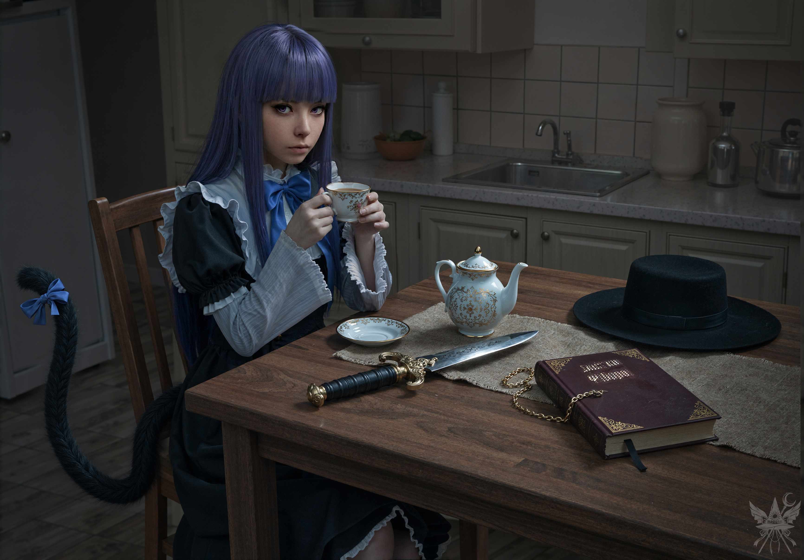

「私が欲しいもの？ ずっと求めていたもの…？ ええ、単純なことです。私はずっと、秘密の知識を追い求めてきました。凡人には隠蔽され、一握りの者だけが触れることを許される特異な知識。偉大な先祖、アレクサンドロス大王に恥じない大魔術師になることが、私の長年の夢なのです」
己の野望を語るうち、つい熱が入り背を向けていた。背後から、くすくすという微かな笑い声が鼓膜を打つ。振り返ると、フレデリカは扇子で口元を隠し、面白そうに肩を震わせていた。
「あら、なんて可愛らしい夢なのかしら。権力や富、復讐、あるいは永遠の命を望むこともできたというのに。あなたが望んだのは、埃をかぶった古臭い知識だなんて。本当に純粋な子ね。でも、役に立つかもしれないわ」
「……笑い事ではありませんよ、フレデリカ様」
「もういいわ、メデア。堅苦しいのはやめましょう。少し座ってもいいかしら？ 長い話になりそうだし、喉も渇いてしまったわ。お茶でも淹れてちょうだい」
毒気を抜かれ、黙って彼女をキッチンへと案内する。コンロに火をつけ、ヤカンに水を張った。

ありふれた一般家庭のキッチンに、ゴシック調のドレスを纏った魔女が腰掛けている。窓から差し込む朝の柔らかい光が、白磁のティーカップの艶やかな表面を照らし出していた。テーブルの上に無造作に置かれたのは、メデアの儀式用の短剣と、エンジ色の革装丁が施された分厚い魔導書、そしてつば広の帽子だ。乾燥したハーブティーの芳醇な湯気と、短剣から漂う冷ややかな金属の匂いが、奇妙に混ざり合って鼻腔をくすぐる。
フレデリカはカップを両手で優雅に持ち、口元へと運んだ。アメジスト色の瞳が、カップ越しにこちらを真っ直ぐに見据えている。背もたれの脇からは、先端に青いリボンを結んだ黒猫の尻尾が覗き、フサフサとした毛並みを揺らしていた。
「とりあえず座りなさいな。仕方ないわね、あなたの夢、叶えてあげる。私が知っていることの、少なくとも一部は教えてあげるわ。色々な人間や……そうではない存在にも会わせてあげる。その知識は、きっと役に立つはずよ。頑張れば、あなたの……ふふ、偉大な先祖も顔負けの、立派な魔術師になれるかもしれないわね」
「本当ですか……？」
「嘘だと思うかしら？ もちろん本当よ。でもね、その代わりにお願いがあるの。協力してほしいのよ」
「何をすればいいのでしょうか？」
「あなたを、ある魔法の国へ送り込みたいの。現地では『幻想郷』と呼ばれているのだけれど……私にはどうしても行けない事情があってね。だから、代わりに道を開いてほしいの。方法は、何でも構わないわ。どうかしら？」
「魔法の国、ですか？ ニンフ[1]ニンフ：ギリシャ神話に登場する精霊やケンタウロス[2]ケンタウロス：ギリシャ神話に登場する、馬の胴体に人間の胸から上がついた姿の生き物、ハーデース[3]ハーデース：ギリシャ神話の冥府の神がいるような場所でしょうか？」
「いいえ、違うわ。幻想郷は……昔の日本みたいな、複雑な場所なの。たくさんの秘密が隠されていて、外から全貌を掴むのは難しいのよ。だから、直接行って確かめてくるしかないの。そこでは、河童とか、天狗とか……そういう妖怪たちに出会うことになるわ」
「カッパ？ テング？ 聞いたことがありませんね。どのような生き物なのですか？」
「見ればわかるわ。だから、自分の目で確かめてきなさい」
「承知しました。それで……具体的な指示は？」
「簡単よ。あなた、一応召喚はできるみたいね。だから儀式自体は問題ないわ。私と連絡を取って、どこでどのように通路を開くか指示を受けるの。それが一番難しいところね。どこでも儀式を行えばいいわけじゃないのよ。特別な場所が必要なの。あなたを送る地域には、候補が三つあるわ。儀式の方法は難しくないから、後で説明するわ。……ところで、お湯が沸いたみたいね」
「ああ、そうですね」
けたたましく鳴り始めたヤカンに歩み寄り、マグカップにお湯を注ぎながら頭の中で情報を整理する。
（この女……突然魔法陣の中に現れたというのに、冗談を言っているようには見えない。本当に私の夢を叶えてくれるのかもしれない。その代価が、ちょっとした協力だけだと言うのなら……。魔法の国、幻想郷か。世間知らずの少女だったあの頃の願いが、まだ胸の奥底にくすぶっている。幻想郷というものを、ぜひこの目で見てみたいものだわ）
カップにティーバッグを落とし、こっそりと背後のフレデリカを観察する。優雅なドレスの下から覗く立派な尻尾が、リズミカルに揺れている。単なる飾りではない証拠だ。（フレデリカは、用心深く接するべき相手だ。次に何をするのか、全く底が知れない）
小さなテーブルにマグカップを置き、向かいの席に腰を下ろした。フレデリカは再びカップを口元へ運び、香りを楽しむように一口だけ紅茶を啜る。そして、儀式の詳細を淡々と語り始めた。
「……最後に、凹んだ線で七芒星を描くのよ。わかったかしら？」
「ええ、手順自体は難しくないはずです。ですが、召喚のための魔力が私に足りるかどうか……」
「もちろん、今のあなたには無理ね。だから、どこかに力の源を見つけなければならないの。魔法を活性化させるエネルギー源のようなものよ。場所によって性質は違うし、中には危険なものもあるわ。幻想郷でそんなものを探すとなれば……何が起こるかわからないわよ。準備はしっかりしておくことね」
「了解しました。では、役に立ちそうなものを用意してきます」
「ええ、待っているわ」
ぬるくなった紅茶を飲み干し、自室へと戻る。
（まずはお金ね。向こうでユーロなんて使えるはずもない。やはり金貨が無難だわ） ガラスの戸棚を開け、ピカピカに磨き上げられた金貨の入った小袋を取り出す。
（ようやく出番が来たわね。何世代にもわたって受け継いできた甲斐があったというものだわ）
寒さを凌ぐための衣服を数枚鞄に詰め込んだ後、視線がお気に入りの変装道具で止まった。黒いマント、つば広帽子、そして精巧な付け髭。「アレクサンドロス」という架空の魔術師を演じるための必需品だ。
（護身用の武器も必要ね） 手に取ったのは、呪文と剣術の訓練に使っていた短剣。黒い革巻きのグリップに、金の装飾が施された鍔。ずっしりとした見た目に反して軽く、刃は冷たく鋭利に研ぎ澄まされている。刀身には魔導書に載っていた戦闘用の呪文が刻まれているが、正直なところ、その正確な意味は解読できていない。
（あとは知識……祖母から受け継いだ、あの魔導書も持っていこう）
金貨の袋をコートのポケットに忍ばせ、キッチンへと戻る。空いたスペースに変装道具、魔導書、短剣を並べた。
「あら、準備万端ね。でも、そんなに色々持っていったら、私の可愛い魔法が台無しになってしまうわ」
「どういう意味でしょうか？ 荷物が多いと、転移に支障でも出るのですか？」
「これらのアイテムには……独特のオーラがあるの。たとえば、今あなたが着ている服は体に馴染んでいるから移動には影響しないけれど、持ち物によっては目的地や時間に誤差が出る可能性があるのよ。わかるかしら？ 石器時代や地中深くに飛ばされるようなことはないけれど、見知らぬ土地で、数十メートル、数分の違いが命取りになるかもしれないわ。アイテムの力が強ければ強いほど、その誤差は大きくなるの。だから、持っていくものは一つだけ選んでちょうだい。目的地を教える間にね」
「承知しました。それで、目的地とはどのような場所なのですか？」
「候補は三つあるわ。まず、森の端にある小屋。二階に何かの魔法を感じるわね。看板には『ふわふわ魔法の店』とか、そんな感じの名前が書かれていたそうよ。次に、遺跡。そこから感じる力は小屋より強いから、儀式もできるかもしれないわ。『夢幻遺跡(むげんいせき)』と呼ばれているそうよ。そして最後は、異世界への門。そこからは、とてつもなく強い力の渦を感じるわ。門を抜けた先にも力の源があるはずよ。実はもう一か所候補があるのだけれど……今のあなたにはまだ早すぎると思うの。だから、この三つの中から一つ選んで。全部覚えたかしら？」
「ええ。魔法の店、夢幻遺跡、そして異世界の門……ですね」
「そうよ。それと、持っていけるアイテムは一つだけ。忘れないでね」
長考している余裕はない。テーブルの上に並んだ三つの品を静かに見つめる。
嘘で身を固める変装道具。先祖代々の知識が詰まった魔導書。血の匂いが染み付いた短剣。
どれを選ぶかによって、待ち受ける未来が全く異なるものになることだけは、直感的に理解できた。